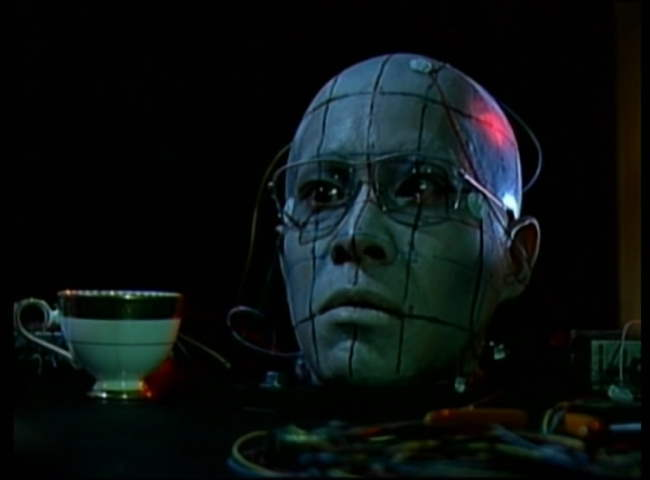
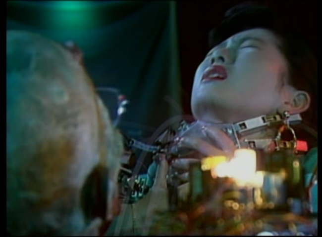
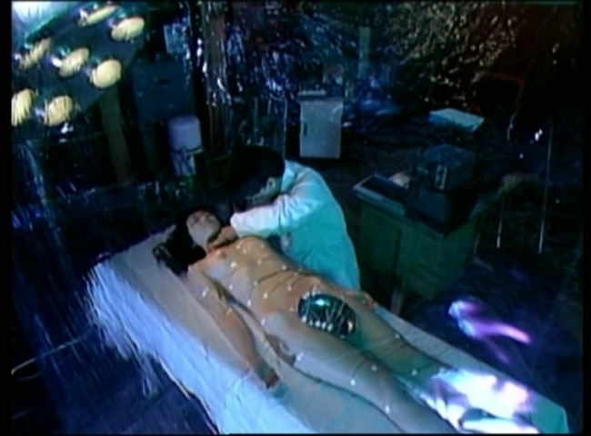

Movie review by : SFAM
Year : 1989
Directed by : Kazuhito Kuramoto
Written by : Kazuhito Kuramoto
Degree of Cyberpunk visuals : Medium
Correlation to Cyberpunk themes : Medium
Rating : 4/10
Key cast members :

Overview: Japanese Cyberpunk films are always looking to extend the boundaries of humanity, but hopefully they do so within the constraints of a semi-coherent plot, with actions by the characters that make sense within the twisted view of the narrative. Android of Notre Dame does away with most of that, and instead goes for massive gross-out scenes with characters whose actions rarely make sense. Gooey substances of all colors and textures come spewing out of every crevice possible from this head in the above shot.

This story, such as it is, has a Japanese dwarf scientist playing a modern-day Dr. Frankenstein (well, Dr. Frankenstein as the hunchback of Notre Dame, actually) in an attempt to find a way to prolong his dying sister's life. Yet, instead of going to the morgue, he goes out and finds associates, kills them in gruesome ways and then performs experiments on their various body parts. His most successful one is shown in the picture at the top, where he takes a guy's head and hooks him up to a variety of wires and implants that allow the "android" (or really, we would call this a cyborg) to have facial movements, control a robotic arm and also can record his visual perceptions into a television. He also has his cyborg head kill this other chick so he can remove her heart in an attempt to fix his dying sister's heart.

The Bottom Line: The idea behind Android of Notre Dame is rich, and, had it been executed better, might have yielded a pretty good Japanese Cyberpunk Flick. The ending scene in particular, where we see the scientist's final failed solution is especially intriguing. Unfortunately, it seems that the Kuramoto was more interested in capturing gross-out scenes than he was in pursuing a promising, if limited story line.